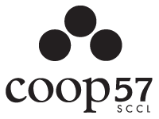
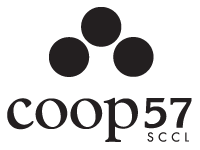
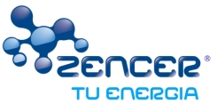
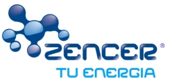
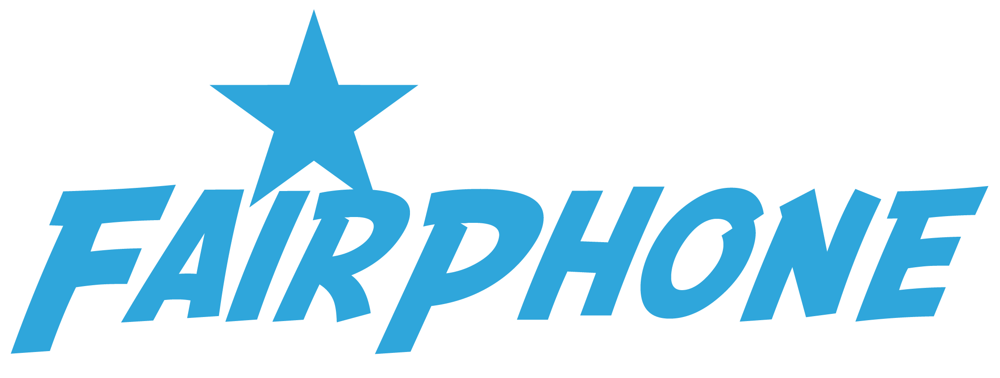
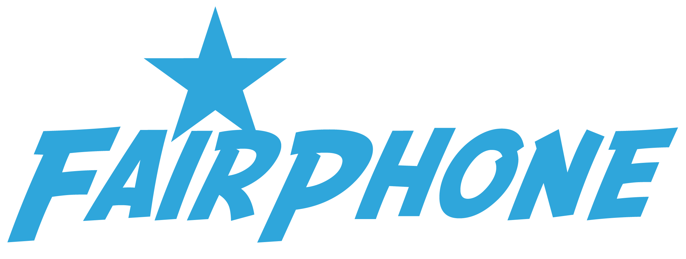
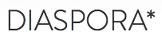
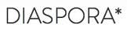

Promoure contactes entre la gent que ha fet el salt i la que no
Promoure alternatives on no n'hi han
Complementar les alternatives existents
Qué falta per fer?
Cobrir molts sectors
Recopilar més informació
Difusió, difusió, difusió
Applicacions socials
Promoure-ho al vostre àmbit
Podeu col·laborar!
Guifibaix
guifibaix.coop
Objectius
Habilitar alternativa ètica a l'actual oligopoli de les telecos
Universalizar la banda ampla d'Internet baixant els preus actuals
Generar ocupació de qualitat mitjançant fórmules cooperativas
La cooperativa
Sense ànim de lucre
Els treballadors decideixen les seves condicions laborals
La xarxa pertany als usuaris
Basada en programari lliure, estàndars oberts i xarxa documentada
Servidors alimentats amb renovables
Principi víric:
Per passar pels altres nodes, has de deixar passar pel teu.
Els nodes
La xarxa
Cobertura
Més de 34.000 nodes!
Cal professionalitzar?
Hom pot muntar i mantenir el seu node, pero calen temps i coneixements tècnics.
A l'escala que volem crèixer, voluntaris no donaríen a l'abast.
Recomanació dels voluntaris existents al poble.
Rodalies: Sant Feliu
Rodalies: Torrelles
Compartició d'Internet
Baix Llobregat
Telefonia IP
Serveis afegits
Podem aprofitar l'ample de banda intern posant serveis interns
Molt més potent que una connexio ADSL o fibra stàndard
Serveis: Mediateca
Serveis afegits
P2P comunitari, Mediateca
Enmagatzemament i compartició al núvol
Streaming de radio i televisió
Centraleta Telefonia IP
Correu, Hosting
...
Costos de la xarxa
Sense ànim de lucre però cal cobrir:
Instal·lació
Manteniment
Sortides a Internet
Telefonia IP
Costos d'operació
Equipament comunitari
Preus: Instal·lació
Cadascú es paga la seva
Hem fet un preu standard de 310€
Pot pujar si cal màstil, obres...
Es paga un sol cop
Es pot repartir en mesos
Preus: Manteniment
Normal: (12'50€+IVA/mes) El mode senzill, no em preocupo d'on surt la connexió.
Preus: Manteniment Aportadors
Aportador: (0€+IVA/mes) El mode voluntari: aporto la meva connexió a Internet. Puc designar acompanyants, que m'ajuden a pagar-la. Màxim 4 acompanyants amb ADSL, 7 amb Fibra.
Acompanyant: (7'50€+IVA/mes) El mode solidari: ajudo a pagar la connexió a l'aportador. Rebo un descompte pel manteniment.
Com procedir
Demanar prova de connectivitat
Pressupost i convèncer a 3 o 4 veïns
Reunió amb els veïns interessats
Instal·lació de la xarxa i proves
Portabilitat del fixe (i baixa de l'oligopoli!!)
I els veïns?
És un servei bàsic i no poden vetar la instal·lació.
Però, convé acordar:
Enganxada de la llum a la comunitat
Per on baixar els cables
Pagaments mitjançant la comunitat
Convidar a que altres veïns s'apuntin
Doncs endavant!
Apunteu-vos per una prova de connectivitat sense compromís


 
 


 
 
 


 
